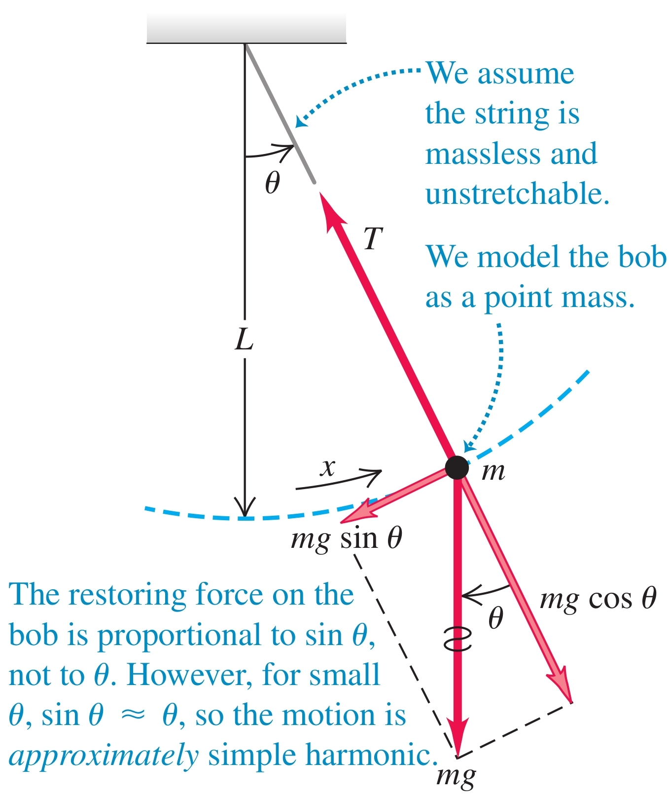

-
Математично махало - идеализиран модел на махало, представляващ материална точка, свързана с безмасова неразтеглива нишка
-
Динамика на математичното махало

а) връщаща сила - пропорционална на
- за малки ъгли и трептенето е приблизително хармонично
б) кръгова честота
Доказателство:
в) период